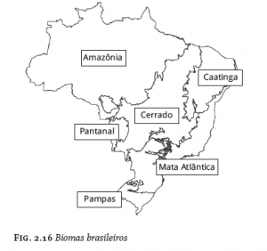
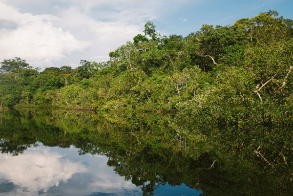
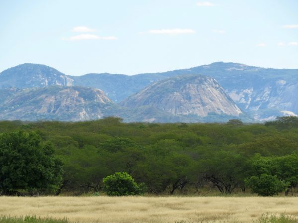
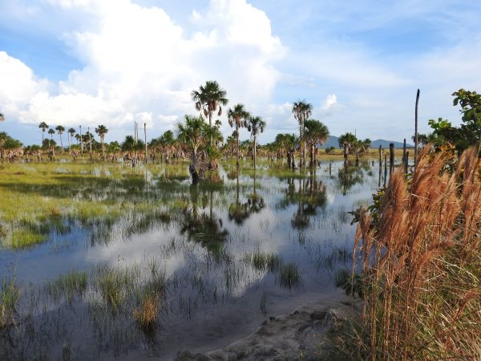
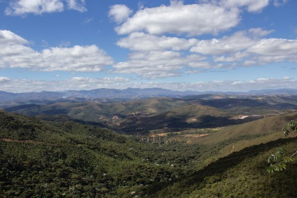
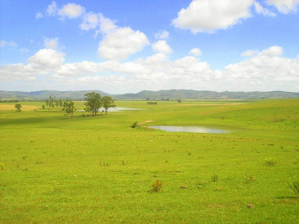
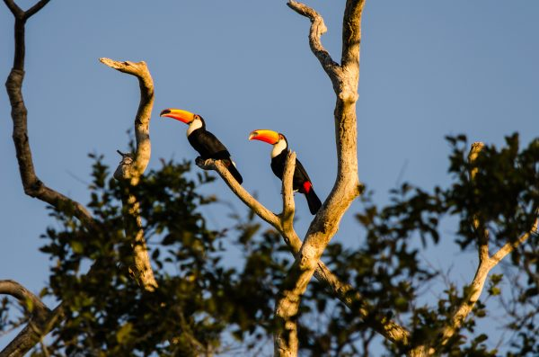

Fauna
A fauna do Brasil é provavelmente a que possui a maior diversidade em espécies de animais vertebrados, anfíbios e primatas do globo terrestre.
Existem três vezes mais espécies de peixes de água doce no Brasil do que em qualquer lugar no mundo. As aves também são muito variadas, colocando o Brasil como o país com a maior variedade de espécies na América do Sul e o terceiro do mundo em espécies de mamíferos.
De igual modo, a Floresta Atlântica está entre as cinco regiões do planeta com mais espécies nativas, das quais 17% são aves e 10% são anfíbios e mamíferos encontrados somente na fauna brasileira. Vale citar que os animais da fauna brasileira são, via de regra, de pequeno porte.
A importância científica da fauna brasileira é indescritível, pois contém a maior biodiversidade do mundo cerca de 100 mil espécies de invertebrados, 8200 espécies vertebrados (713 mamíferos, 1826 aves, 721 répteis, 875 anfíbios, 2800 peixes continentais e 1300 peixes marinhos) das quais 627 já estão na lista negra das espécies ameaçadas de extinção (394 espécies terrestres e 233 espécies aquáticas).
Outros números apontam que, no Brasil, existem mais espécies, chegando a 11 mil entre mamíferos, aves, répteis, anfíbios e peixes e mais de 30 milhões de espécies de insetos.
Porém, a poluição do meio ambiente, somada ao desmatamento desenfreado das florestas, ao comércio ilegal de animais e a caça predatória, tem levado as autoridades nacionais e internacionais a um estado de preocupação.
Recentemente (2008), o Ministério do Meio Ambiente, apoiado no trabalho de centenas de especialistas, lançou o “Livro Vermelho da Fauna Brasileira Animais Ameaçados de Extinção”, no qual aponta, dentre outras, que o tráfico de animais no Brasil retira mais de 12 milhões de animais do território nacional anualmente.
Flora
"Flora" é o conjunto de espécies vegetais que compõe a cobertura vegetal de uma determinada área. A flora brasileira é reconhecida como uma das mais importantes. No Brasil, há milhares e milhares de espécies vegetais nativas ainda não estudadas.
São inúmeras as aplicações das espécies vegetais: alimentação, medicina, vestuário, construção civil, móveis; fabricação de tecidos e papel; produção de perfumes, inseticidas e outras. A enorme variedade de utilização das plantas comprova a sua importância na vida do homem.
No território brasileiro existe uma enorme variedade de plantas. São mais de 46.000 espécies conhecidas de vegetais. São, aproximadamente, 4.754 Algas, 33.108 Angiospermas, 1.568 Briófitas, 5.719 Fungos, 30 de Gimnospermas e 1.346 de Samambaias e Licófitas. Porém, mais de 2.300 espécies de vegetais estão ameaçadas de extinção em nosso país.
Proteger a flora pode significar equilibrar todas as atividades desencadeadas pelo avanço tecnológico, reduzindo a poluição, o desequilíbrio ecológico, o problema energético, a falta de alimentos no mundo e até mesmo a crise econômica.
Ecossistemas
O Brasil é um País com dimensões continentais, muito vasto em território, e possui diversos contrastes no que diz respeito ao clima, à geomorfologia e aos solos. Cada uma das porções físico-climáticas que compõem as cinco regiões é mais ou menos favorável a determinados grupos de animais e plantas, e estes se tornam responsáveis por caracterizar as paisagens e definir os ecossistemas brasileiros.
Nosso território é composto por seis biomas que apresentam características bastante distintas entre si, e mesmo dentro de um único ecossistema é possível observar diferenças entre as espécies que o habitam. Estas formam o que chamamos de mosaicos de tipos vegetacionais, que são o que tornam os ecossistemas brasileiros tão diversos e nosso País tão múltiplo.
Principais ecossistemas brasileiros
Amazônia
A maior floresta tropical do mundo está presente em nosso País! Distribuindo-se entre Peru, Colômbia, Venezuela, Equador, Suriname, Guiana e Guiana Francesa, uma grande porção da Floresta Amazônica se localiza no Norte do Brasil, com uma grande diversidade de plantas e animais, além de abrigar comunidades de povos originários brasileiros.
Caatinga
A vegetação desse ecossistema é genuína e unicamente brasileira. Localizada na região Nordeste, a Caatinga ocupa 11% do território nacional. O clima do bioma é o semiárido, com temperatura média anual variando entre 25 e 30 °C e pluviosidade entre 300 e 800 mm por ano.
Cerrado
Outro importante bioma entre os ecossistemas brasileiros, o Cerrado cobre cerca de 22% do território nacional, na porção interior do País, onde o clima é quente, com períodos bastante delimitados entre chuva e seca. Com a umidade relativa do ar baixa, 80% do volume total de chuvas se concentram entre os meses de outubro e abril. A temperatura média anual da região varia entre 20 e 26 °C.
Mata Atlântica
Ocupando 15% do território brasileiro, a Mata Atlântica é, ao mesmo tempo, um dos ecossistemas mais diversos em espécies animais e vegetais do mundo e um dos mais ameaçados. Abrigando 145 milhões de pessoas em toda a área que abrange, esse ecossistema provê serviços ecossistêmicos essenciais, com clima predominantemente tropical úmido, extensos períodos de chuva e temperaturas elevadas.
Pampas
Também conhecidos como Campos Sulinos, os Pampas se localizam na região Sul do Brasil. Com o clima quente temperado e úmido, onde predomina o relevo plano, o ecossistema ocupa somente 2% do território do País.
Nessa região, as quatro estações do ano são bastante definidas, com temperaturas médias anuais variando entre 13 e 17 °C e chuvas entre 1.200 a 1.600 mm. A vegetação dos Pampas é caracterizada pelos campos limpos, com grande presença de herbáceas, e os campos sujos, compostos por arbustos em meio a tapetes de herbáceas.
Pantanal
Esse bioma compreende menos de 2% do território brasileiro, sendo considerado o menor do País. No entanto, é uma das maiores planícies alagadas do mundo! Localizado na região Centro-Oeste, o clima do Pantanal é predominantemente tropical estacional. As temperaturas médias anuais atingem 25 °C, podendo chegar a 40 °C, e a pluviosidade varia entre 1.000 e 1.500 mm anuais.
